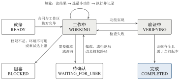

7.7 Loop Engineering：让执行结果决定下一步
前三类工程已经给 Agent 定了任务、备了信息、配了受控的工具。剩下的是时间上的问题：第一步做完以后，第二步怎样定？什么时候该重试、换方案、问人，什么时候才能真正结束？Claude Code 的官方文档把它的工作方式概括为“获取上下文—采取行动—验证结果”的反复循环[2]；本节把这个循环当作需要设计的对象：给出任务状态机，规定每一轮的五个步骤，按失败类型决定重试还是换方案，并用时区错误的轨迹演示一个“越转问题越小”的循环。结论是：循环的价值不在多跑几轮，而在每一轮都拿到新证据、缩小问题。
7.7.1 一个有效的循环包含哪些状态
最简单的工具循环是：模型提出工具调用，系统执行，结果发回模型，直到模型不再调用工具。这个形式只解决了消息往返。真实的开发任务还要判断：测试是否满足验收标准？是否在等用户批准？是否达到了重试上限？是否因为环境问题受阻？所以要把任务状态显式保存，而不是把全部进展藏在聊天记录里。设计一个循环，要写清五项配置：
目标：最终要实现什么，例如“日程开始前 10 分钟提醒”；
完成条件：时间正确、没有重复提醒、真实写入前已确认、相关测试全部通过；
当前状态：处在下面状态机的哪一个状态；
可执行动作：读代码、改代码、跑小测试、跑完整流程、向用户提问；
退出规则：全部达标则完成；重复失败、权限不足或达到上限则停下。
图 7-9 是本章使用的教学状态机（不对应某个产品的内部实现）。六个状态是：就绪（已收到任务，工作区和边界待核对）、工作中（正在读取、修改或执行检查）、验证中（功能已实现，正在检查完成条件）、待确认（需要用户澄清或批准外部动作）、阻塞（环境或权限使工作无法继续）、完成（验收证据齐全）。常见的“测试失败”不单列为状态，而是“验证中 → 工作中”这条迁移的触发条件。

图 7-9 Loop 的教学状态机。箭头上标出触发迁移的事实（“检查失败”即常说的测试失败）；完成（高亮）只能由“证据齐全且属于当前版本”触发。阻塞和待确认都把决定权交还给人
状态迁移要有明确的触发事实：“相关测试失败”使任务从验证中回到工作中；“即将向真实邮箱发送内容”使任务进入待确认；“测试、构建、差异审查都符合任务合同”才允许进入完成。模型可以建议状态变化，运行系统核对证据后再提交变化。如果模型一句“我已经完成”就能把状态设为完成，完成门禁就形同虚设。
7.7.2 每一轮的五个步骤
一次有效的迭代可以拆成五步：
读取结果：先看上一轮的错误、测试结果和已经修改的内容；
找主要问题：只选当前最影响完成条件的那一个；
选最小有用动作：优先做能最多减少不确定性、成本又低的读取、修改或测试；
执行并记录：保存改动、工具返回结果和新的验证证据；
判断去向：继续、换方案、询问用户，或确认完成并结束。
这不是限制 Agent 一轮只能调用一个工具，而是保证下一步能追溯到新证据。由此有三条设计原则：每轮只解决一个主要问题（时区错了就先处理时间转换）；先做成本最低的检查（先跑相关单元测试，再跑完整的端到端测试）；下一步由结果决定（失败就定位原因，通过后再扩大检查）。每改一行都跑全部端到端测试，延迟太高；只跑小测试就结束，又留下回归风险。
为了让这些原则可执行，每轮留下三句话的记录：改了什么、看到了什么、为什么这样选下一步。例如“修改时间转换函数；相关测试仍相差八小时；需要检查输入时间戳是否已带时区”。记录保留了因果链，避免长任务绕回早已被否定的假设；证据要指向命令、文件版本或工具结果，而不只是一段推理文字。
7.7.3 失败先分类，再决定重试或换方案
“失败”不是单一事件，不同原因应走向不同分支（表 7-14）。这张表建立在第 7.5.2 小节的分层错误报告之上：工具若不区分错误类型，循环就无从分类。
表 7-14 编程任务中的失败分类与处理
| 结果 | 首先检查 | 合理动作 |
|---|---|---|
| 工具参数错误 | 参数描述、必填字段、目标路径 | 修正参数，不改业务代码 |
| 权限拒绝 | 动作范围、审批状态 | 请求授权或报告受阻，不换路径绕过 |
| 网络超时 | 服务状态、请求是否可能已生效 | 带幂等键限次重试，必要时先查询结果 |
| 依赖或环境错误 | 锁文件、运行版本、Mock 服务 | 修复或报告环境，不当作业务逻辑错误 |
| 测试断言失败 | 期望值、实际值、代码版本 | 缩小到相关函数，改正原因后重测 |
| 完整回归失败 | 新旧测试差异、改动范围 | 定位回归，再依次跑局部与完整检查 |
重试只适合可能自行消失的暂时故障。为什么？下面的例题给出定量的回答。
例 7-3 重试什么时候有用
设重试上限为 2 次，即每个步骤最多尝试 \(m=3\) 次；记单次尝试的失败概率为 \(q\)。分三种情况计算成功概率：步骤 1 取 \(q=0.2\) 的单个步骤，步骤 3～6 是另一组例子，取 \(q=0.05\) 的 10 步链路。
| 步骤 | 算什么 | 算式 | 结果 | 这个数从哪来 |
|---|---|---|---|---|
| 1 | 暂时故障，单步最多 3 次 | \(1-q^{m}=1-0.2^{3}\) | 0.992 | 网络超时概率 \(q=0.2\)，各次独立 |
| 2 | 确定性错误，单步最多 3 次 | \(1-1^{3}\) | 0 | 代码和输入不变，每次都必然失败 |
| 3 | 10 步链路，不重试 | \((1-0.05)^{10}\) | 0.599 | 每步暂时故障概率 0.05，全部成功才算成功 |
| 4 | 每步成功率（可重试） | \(1-0.05^{3}\) | 0.999875 | 同上，每步最多 3 次 |
| 5 | 10 步链路，可重试 | \(0.999875^{10}\) | \(\approx0.99875\) | 步骤 4 的十次方 |
| 6 | 每步平均尝试次数 | \(1+0.05+0.05^{2}\) | 1.0525 | 第 2、3 次只在前一次失败时发生 |
数据流向：失败 → 判断类型（表 7-14）→ 暂时故障：限次重试；确定性错误：改代码或换假设。
结论：对独立发生的暂时故障，两次重试就能把 10 步链路的成功率从约 60% 提到约 99.9%，平均只多花约 5% 的调用；对确定性错误，重试成功率始终为 0，只会让成本变成三倍。成功率公式 \(1-q^{m}\) 成立的前提是各次失败相互独立。注意：若重试的是发邮件这类写操作，“第一次其实已经成功、只是回执丢了”会造成重复发送，必须配合幂等键（第 7.5.5 小节）。
因此，同一个断言连续给出同样的结果时，原样重跑不会增加信息，应检查假设、扩大取证范围或请人判断。一个适合教学项目的换方案信号是：同一错误连续出现两次，且没有得到新线索。注意它与重试上限是两条规则：重试上限（2 次）管的是暂时故障，换方案信号管的是确定性错误——后者第二次出现就不该再原样尝试。生产系统可以按故障率和调用成本调整阈值，但必须有上限。
7.7.4 从局部验证走到真正完成
完成条件来自第 7.3.3 小节的任务合同，循环负责收集和检查证据。常见的验证顺序是：最相关的单元测试 → 类型检查与完整测试 → 构建、检查页面或服务行为 → 审查代码差异。某一步失败就回到定位与修正；某一步无法运行，状态应转为“阻塞”，或停留在“验证中”并在报告里列出未验证的项目，而不是“完成”。
辨析
工具循环结束不等于工程任务完成。模型不再请求工具，可能是它认为答案够了，也可能是碰到了 token 或预算上限，或者需要用户输入；这些都不能证明验收条件已满足。完成门禁要独立核对：必需的测试是否在当前提交上运行过，关键行为是否都有证据，外部写入是否经过批准，最终差异是否落在允许范围内。OpenAI Cookbook 中介绍 Codex Goals 的文章同样要求，持续目标是否完成要对照文件、测试、日志或产物来判断，不能只凭模型的完成声明[4]。
7.7.5 一条轨迹：时区错误怎样缩小
回到第 7.1.4 小节的提醒功能：会议 09:00 开始，提醒应在 08:50，测试实际得到 16:50。表 7-15 的轨迹只有三轮，但每一轮都引入了新证据。
表 7-15 时区错误的修复轨迹
| 轮次 | 新证据 | 当前判断 | 下一步 |
|---|---|---|---|
| 1 | 期望 08:50，实际 16:50，正好相差 8 小时 | 8 小时正是 UTC 与北京时间之差，优先检查时间的解释方式 | 读取输入时间的格式和转换函数 |
| 2 | 输入时间带 UTC 标记（末尾的 Z），转换函数已把它换成北京时间，格式化时又加了一次 8 小时 | 找到与错误幅度一致的原因 | 只改转换边界，运行时间计算的单元测试 |
| 3 | 时间单元测试通过 | 局部错误已修复，仍需排除回归 | 运行完整测试和构建，审查最终差异 |
这条轨迹体现了循环的核心：第一轮的失败缩小了范围，第二轮的证据改变了实现，第三轮通过后扩大了检查。如果第二轮修复后仍差八小时，合理的动作是重新核对假设，而不是无限次地重跑同一测试。反过来，下面这些做法都让循环“空转”：不读结果就把完整测试原样再跑一遍；同时改页面、数据库和转换函数，无法判断哪处起作用；时间测试通过就宣布完成，没有跑回归。真实的时区处理还要覆盖带偏移量的输入、跨日和夏令时等边界，这里只演示决策方法。
7.7.6 长任务、人工接管与多 Agent 反馈
长任务不能只有“成功”一个出口。至少要设三类停止条件：目标已经达到；预算或重试上限已到；下一步需要人的权限或业务判断。与之配套的是三个必须设置的边界：
重试上限：暂时故障最多重试 2 次，同一错误连续两次无新线索即换方案；
安全保存点：每达到一个稳定状态（例如相关测试通过），保存代码检查点和任务状态摘要；
人工接管：权限不足、业务规则不明、即将执行不可撤销的动作时，暂停并把证据交给人。
用户中途改变目标时，任务合同和剩余计划都要更新；用户拒绝某个动作时，循环要记录拒绝，并选择仍在授权范围内的路径；没有可行路径，就报告受阻，而不是继续尝试越过边界。恢复时先核对工作区提交、最近一次成功的检查和待批准动作，再决定是否继续；若暂停期间文件被别人改过，旧的测试结果不再自动适用。
多 Agent 协作服从同样的原则。父 Agent 把任务分给子 Agent 或 A2A 远端 Agent 后，“等待结果”本身就是一种状态；远端返回执行中、需要输入或失败，都会改变父任务的下一步。子 Agent 的报告是一份待核验的证据：父 Agent 还要检查代码版本、产物内容、合并冲突和整体验收。这样，“多个 Agent 都说完成了”才不会被误写成“项目已经完成”。
7.7.7 把循环写成可执行的规则
对今日工作助手，下一步的判断规则可以直接写成：单元测试失败 → 读具体错误，只改相关代码；单元测试通过 → 运行端到端测试；同一错误连续两次 → 停止原样重试，重新分析；需要写真实日历 → 暂停，等待用户确认；全部检查通过 → 审查最终差异，然后结束。下面的伪代码把这些规则写成程序控制逻辑（教学示意，依赖前几节的任务合同、上下文管理和 Harness）：
while state in (WORKING, VERIFYING):
obs = read_latest_result()
record(action, obs, code_revision) # 改了什么、看到什么、为何下一步
if approval_required(obs): state = WAITING_FOR_USER; break
if environment_blocked(obs): state = BLOCKED; break
if same_failure_without_new_evidence >= 2: # 换方案信号
change_hypothesis_or_handoff(); continue
if local_check_failed(obs):
choose_smallest_diagnostic_action(); state = WORKING; continue
if local_check_passed(obs) and broader_checks_missing():
run_next_broader_check(); state = VERIFYING; continue
if all_done_when_have_current_evidence() and final_diff_reviewed():
state = COMPLETED; break实现时还应为每轮记录模型调用次数、工具耗时、token 与计算成本、失败类型和人工介入次数。它们不能代替完成条件，却能发现“任务虽然成功，成本却不可接受”的问题。比较两套循环策略时，应固定仓库、任务集、模型、工具和预算，分别观察成功率、完成时间、重试次数和风险动作；只展示一条成功的轨迹，不足以证明哪套策略更好（第 7.8 节将讨论怎样做这种比较）。
本节要点
循环要写清五项配置：目标、完成条件、当前状态、可执行动作、退出规则；状态迁移由证据触发，由系统提交。
每轮五步：读结果、找主要问题、选最小动作、执行并记录、判断去向。
重试只对独立的暂时故障有效；确定性错误要改原因；工具循环结束不等于任务完成。